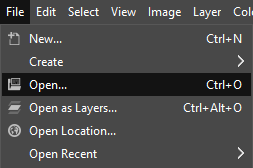
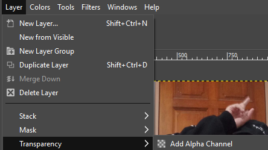
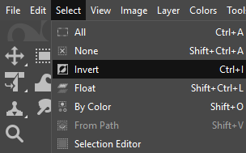
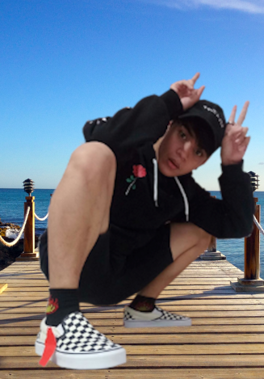
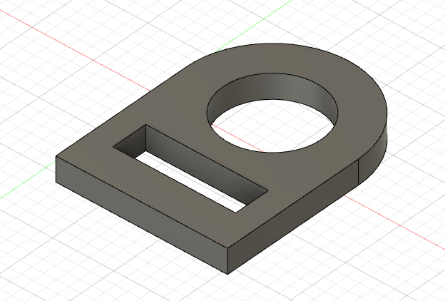
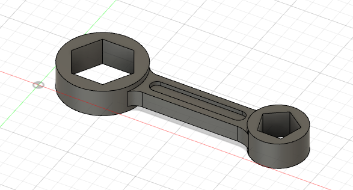
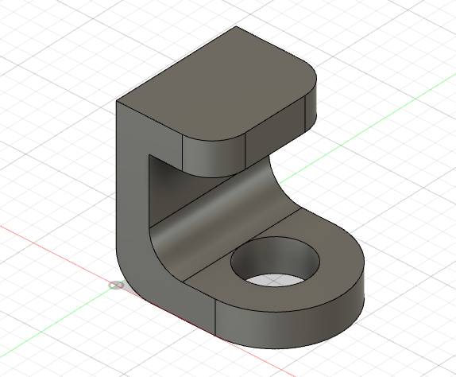

Gimp and Fusion 360
Purpose of Gimp
Image editing and retouching
Assigment 4
How to remove background for image
Step 1:Open the picture of you in Gimp
 |
Step 2:Go to Layer,transparency, and add alpha channel
 |
Step 3:Use the free select tool and use your mouse to select your body
Step 4:Go to Select and click on invert
 |
Step 5:Go to Edit and click on clear to remove the background
Step 6:Go to Select and click none to deselect the selection
Step 7:Export as PNG file
Step 8:Go to File, open as layer and select the image you want to be edited on
Step 9:Go to your PNG layer, Select layer, Stack, and then Layer to top
|  |
Fusion 360 Exercises
Exercise 1
 |
Exercise 2
 |
Exercise 3
 |